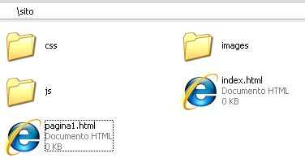

ATP Tecnica professionale
Passi per realizzare il sito della tesina
In questa pagina sono inserite le informazioni per realizzare il mini sito della classe terza:
- Pensare a cosa si vuole inserire (il tema della tesina)
- Creare una pagina html base
- Creare una struttura con cartelle per immagini, css, javascript ecc

- Inserire i riferimenti al CSS nella sezione head della pagina HTML
<link rel="stylesheet" href="css/style.css" type="text/css" />
- Creare una file .css con alcuni stili CSS
- Impaginare i contenuti delle pagine con l'inserimento dei <div> per passare da Pagina senza DIV a Pagina con DIV alla Pagina con DIV e CSS in linea
- Creare un menu un possibile menu e con i CSS Menu dinamico
- Creare animazioni o grafica del menu
- Inserire animazioni javascript (slideshow)
- Testare le Pagine
- Inserire una tabella Tabella
- Inserire un menu' animato in css